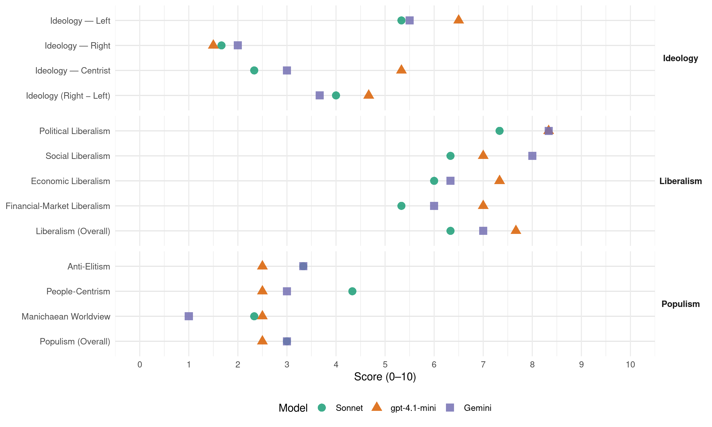

SPD (Germany, 1965)
manifesto_id 41320_196509
Get full text: This site shows derived annotations and short verbatim quotes only. The full manifesto text is © Manifesto Project / WZB — obtain it via manifesto-project.wzb.eu using the manifesto_id above.
Headline scores
| Dimension | Sonnet | gpt-4.1-mini | Gemini |
|---|---|---|---|
| Populism (Overall) | 3.0 | 2.5 | 3.0 |
| Anti-Elitism | 3.3 | 2.5 | 3.3 |
| People-Centrism | 4.3 | 2.5 | 3.0 |
| Manichaean Worldview | 2.3 | 2.5 | 1.0 |
| Ideology (Right − Left) | 4.0 | 4.7 | 3.7 |
| Liberalism (Overall) | 6.3 | 7.7 | 7.0 |
| Political Liberalism | 7.3 | 8.3 | 8.3 |
| Social Liberalism | 6.3 | 7.0 | 8.0 |
| Economic Liberalism | 6.0 | 7.3 | 6.3 |
| Financial-Market Liberalism | 5.3 | 7.0 | 6.0 |
Evidence per dimension
Economic Liberalism
Gemini · score 7.0 · verified · chunk 1
“Marktwirtschaft, geldpolitische und finanzpolitische Globalsteuerung”
Marktwirtschaft, geldpolitische und finanzpolitische Globalsteuerung sowie Wohlstandspolitik bilden für uns
Gemini · score 6.0 · verified · chunk 2
“Die Preisbildung soll im Prinzip frei sein”
IV. Die Preisbildung soll im Prinzip frei sein. Die Tarifgestaltung sollte sich im Rahmen der Tarifautonomie
Gemini · score 6.0 · verified · chunk 3
“Wirtschaft in diesen Gebieten einem verschärften Wettbewerb”
ungünstiger Standort und eine ungenügende Infrastruktur die Wirtschaft in diesen Gebieten einem verschärften Wettbewerb aussetzen. Um diese unverschuldete ungünstige
gpt-4.1-mini · score 8.0 · verified · chunk 1
“Marktwirtschaft, geldpolitische und finanzpolitische Globalsteuerung sowie Wohlstandspolitik”
Marktwirtschaft, geldpolitische und finanzpolitische Globalsteuerung sowie Wohlstandspolitik bilden für uns eine Einheit.
gpt-4.1-mini · score 7.0 · verified · chunk 2
“Die Bundesrepublik braucht ein gesundes, funktionsfähiges Verkehrssystem auf der Basis des Prinzips der Kostendeckung”
II. . Die Bundesrepublik braucht ein gesundes, funktionsfähiges Verkehrssystem auf der Basis des Prinzips der Kostendeckung. Ein zügelloser, übertriebener und daher ruinöser Wettbewerb entspricht nicht den Grundsätzen einer gesunden Volkswirtschaft.
gpt-4.1-mini · score 7.0 · verified · chunk 3
“Die Förderung des Zonenrandgebietes ist eine politische Aufgabe”
Die Förderung des Zonenrandgebietes ist eine politische Aufgabe und damit ein Beitrag zur Wiedervereinigung Deutschlands. Alle Hilfsmaßnahmen müssen deshalb in engem und vertrauensvollem Zusammenwirken zwischen Bund, Ländern, Gemeinden, sowie der Wirtschaft und den Gewerkschaften durchgeführt werden.
Sonnet · score 7.0 · verified · chunk 1
“marktwirtschaftlichen Leistungswettbewerb gilt es insbesondere dadurch zu sichern”
Den marktwirtschaftlichen Leistungswettbewerb gilt es insbesondere dadurch zu sichern, daß Wettbewerbsbeschränkungen abgebaut werden.
Sonnet · score 5.0 · mixed · chunk 2
“gleiche Wettbewerbsmöglichkeiten der verschiedenen Energieträger”
Die Sozialdemokratische Partei fordert eine systematisch vorausschauende Energiepolitik, die auf gleiche Wettbewerbsmöglichkeiten der verschiedenen Energieträger hinwirkt
Sonnet · score 5.0 · verified · chunk 3
“Wirtschaft und Währung nicht gefährdet”
Das wird im Rahmen einer verantwortungsvollen Finanzpolitik geschehen, die Wirtschaft und Währung nicht gefährdet.
Financial-Market Liberalism
Gemini · score 6.0 · verified · chunk 1
“gemeinnützige Investmentgesellschaften zu gründen”
Dafür sind auch gemeinnützige Investmentgesellschaften zu gründen, deren Zertifikate vor allem
Gemini · score 6.0 · verified · chunk 3
“Kredite zu gleichmäßigen Zinsen in Höhe”
ein umfassendes Kreditprogramm einleiten, damit Kredite zu gleichmäßigen Zinsen in Höhe von 3 Prozent und Laufzeiten von 5
gpt-4.1-mini · score 7.0 · verified · chunk 1
“Die Mittel des Bundes und der Länder, die zur Zeit für landwirtschaftliche Maßnahmen zur Verfügung gestellt werden”
Für die Finanzierung der Vorschläge, die in ihren wesentlichen Teilen bis zum Ende der Übergangszeit im Gemeinsamen Markt erfüllt sein sollen, sind die Mittel des Bundes und der Länder, die zur Zeit für landwirtschaftliche Maßnahmen zur Verfügung gestellt werden, in vollem Umfange einzusetzen.
Sonnet · score 6.0 · verified · chunk 1
“langfristige, öffentliche Kredit bedarf langfristiger Pflege”
Dem neuen Bundestag werden wir vorschlagen, vom Instrument der mittelfristigen Haushaltswirtschaft Gebrauch zu machen. Der langfristige, öffentliche Kredit bedarf langfristiger Pflege.
Sonnet · score 5.0 · verified · chunk 2
“zinsgünstige Kredite für Rationalisierungsinvestitionen bereitgestellt”
alle gesetzlichen Möglichkeiten zur positiven Rationalisierung des Steinkohlenbergbaus ausgeschöpft und zinsgünstige Kredite für Rationalisierungsinvestitionen bereitgestellt werden
Sonnet · score 5.0 · verified · chunk 3
“Kredite zu gleichmäßigen Zinsen in Höhe von 3 Prozent”
damit Kredite zu gleichmäßigen Zinsen in Höhe von 3 Prozent und Laufzeiten von 5 bis 15 Jahren für die Rationalisierung und Erweiterung sowie Neuansiedlung von Betrieben zur Verfügung stehen.
Political Liberalism
Gemini · score 8.0 · verified · chunk 1
“Verteidigung, Verbreiterung, Vertiefung”
das ist der Sinn der Demokratie. Deren Verteidigung, Verbreiterung, Vertiefung sind Aufgaben
Gemini · score 8.0 · verified · chunk 2
“unsere freiheitlich-demokratische Grundordnung gegen alle Gefahren zu schützen”
im Falle von Not und Gefahr alles für ihre Überwindung zu tun, den Menschen zu ’helfen und unsere freiheitlich-demokratische Grundordnung gegen alle Gefahren zu schützen
Gemini · score 9.0 · verified · chunk 3
“Mißbrauch politischer Macht zu verhindern”
Aufteilung der Staatsgewalt zwischen einem Zentralstaat und den Gliedstaaten geeignet, den Mißbrauch politischer Macht zu verhindern. : ’ Das bundesstaatliche Prinzip
gpt-4.1-mini · score 8.0 · verified · chunk 1
“Die durch das Grundgesetz gewährte Pressefreiheit und Freiheit der Information”
Die durch das Grundgesetz gewährte Pressefreiheit und Freiheit der Information gebietet die Unabhängigkeit von Presse, Hörfunk, Fernsehen und Film von jeglicher Bevormundung.
gpt-4.1-mini · score 8.0 · verified · chunk 2
“Die volle politische Verantwortung des Parlaments in jeder möglichen Gefahrenlage wird nicht gemindert”
a) Die Gewaltenteilung bleibt unangetastet. Die volle politische Verantwortung des Parlaments in jeder möglichen Gefahrenlage wird nicht gemindert. Äußerstenfalls wird die Verantwortung durch das Notparlament, das für Bundesrat und Bundestag handelt, wahrgenommen.
gpt-4.1-mini · score 9.0 · verified · chunk 3
“Die Bundesrepublik Deutschland ist ein demokratischer und sozialer Bundesstaat”
Die Bundesrepublik Deutschland ist ein demokratischer und sozialer Bundesstaat. Ihre bundesstaatliche Ordnung entspricht bewährter deutscher Rechtstradition, die nur von 1933 bis 1945 durchbrochen war. Die SPD bekennt sich zu dieser Ordnung unseres Bundesstaates. Sie ist eine feste Grundlage für die Entwicklung einer freiheitlichen, rechtsstaatlichen und sozialen Demokratie in unserem Lande. Im modernen Staat ist eine klare Aufteilung der Staatsgewalt zwischen einem Zentralstaat und den Gliedstaaten geeignet, den Mißbrauch politischer Macht zu verhindern.
Sonnet · score 8.0 · verified · chunk 1
“Deren Verteidigung, Verbreiterung, Vertiefung sind Aufgaben”
Wir wollen nicht den Menschen verstaatlichen; wir wollen den Staat vermenschlichen. Das ist der Sinn der Demokratie. Deren Verteidigung, Verbreiterung, Vertiefung sind Aufgaben, die täglich neu in Angriff genommen werden müssen.
Sonnet · score 7.0 · verified · chunk 2
“freiheitlich-demokratische Grundordnung gegen alle Gefahren”
eine gemeinsame Aufgabe aller verantwortlichen Kräfte ist…unsere freiheitlich-demokratische Grundordnung gegen alle Gefahren zu schützen
Sonnet · score 7.0 · verified · chunk 3
“freiheitlichen, rechtsstaatlichen und sozialen Demokratie”
Sie ist eine feste Grundlage für die Entwicklung einer freiheitlichen, rechtsstaatlichen und sozialen Demokratie in unserem Lande.
Liberalism (Overall)
Gemini · score 7.0 · verified · chunk 1
“Marktwirtschaft, geldpolitische und finanzpolitische Globalsteuerung”
Marktwirtschaft, geldpolitische und finanzpolitische Globalsteuerung sowie Wohlstandspolitik bilden für uns
Gemini · score 7.0 · verified · chunk 2
“unsere freiheitlich-demokratische Grundordnung gegen alle Gefahren zu schützen”
im Falle von Not und Gefahr alles für ihre Überwindung zu tun, den Menschen zu ’helfen und unsere freiheitlich-demokratische Grundordnung gegen alle Gefahren zu schützen
Gemini · score 7.0 · verified · chunk 3
“Mißbrauch politischer Macht zu verhindern”
Aufteilung der Staatsgewalt zwischen einem Zentralstaat und den Gliedstaaten geeignet, den Mißbrauch politischer Macht zu verhindern. : ’ Das bundesstaatliche Prinzip
gpt-4.1-mini · score 8.0 · verified · chunk 1
“Die durch das Grundgesetz gewährte Pressefreiheit und Freiheit der Information”
Die durch das Grundgesetz gewährte Pressefreiheit und Freiheit der Information gebietet die Unabhängigkeit von Presse, Hörfunk, Fernsehen und Film von jeglicher Bevormundung.
gpt-4.1-mini · score 7.0 · verified · chunk 2
“Die volle politische Verantwortung des Parlaments in jeder möglichen Gefahrenlage wird nicht gemindert”
a) Die Gewaltenteilung bleibt unangetastet. Die volle politische Verantwortung des Parlaments in jeder möglichen Gefahrenlage wird nicht gemindert. Äußerstenfalls wird die Verantwortung durch das Notparlament, das für Bundesrat und Bundestag handelt, wahrgenommen.
gpt-4.1-mini · score 8.0 · verified · chunk 3
“Die Bundesrepublik Deutschland ist ein demokratischer und sozialer Bundesstaat”
Die Bundesrepublik Deutschland ist ein demokratischer und sozialer Bundesstaat. Ihre bundesstaatliche Ordnung entspricht bewährter deutscher Rechtstradition, die nur von 1933 bis 1945 durchbrochen war. Die SPD bekennt sich zu dieser Ordnung unseres Bundesstaates. Sie ist eine feste Grundlage für die Entwicklung einer freiheitlichen, rechtsstaatlichen und sozialen Demokratie in unserem Lande.
Sonnet · score 7.0 · verified · chunk 1
“Marktwirtschaft, geldpolitische und finanzpolitische Globalsteuerung”
Marktwirtschaft, geldpolitische und finanzpolitische Globalsteuerung sowie Wohlstandspolitik bilden für uns eine Einheit. Wir werden weder in die Entscheidungen der Unternehmen hineinregieren, noch werden wir Eigentum antasten.
Sonnet · score 6.0 · verified · chunk 2
“freiheitlich-demokratische Grundordnung gegen alle Gefahren”
eine gemeinsame Aufgabe aller verantwortlichen Kräfte ist…unsere freiheitlich-demokratische Grundordnung gegen alle Gefahren zu schützen
Sonnet · score 6.0 · verified · chunk 3
“freiheitlichen, rechtsstaatlichen und sozialen Demokratie”
Sie ist eine feste Grundlage für die Entwicklung einer freiheitlichen, rechtsstaatlichen und sozialen Demokratie in unserem Lande.
Anti-Elitism
Gemini · score 3.0 · verified · chunk 1
“Mangel an Vorausschau und Führungslosigkeit”
Selbstzufriedenheit, Selbstsucht, Mangel an Vorausschau und Führungslosigkeit das Erreichte zu gefährden
Gemini · score 4.0 · verified · chunk 2
“vielfach von Sonderinteressen geprägte Haltung”
unermüdliche Arbeit zehntausender Kommunalpolitiker war und ist aber erschwert durch die verständnislose, vielfach von Sonderinteressen geprägte Haltung der bisherigen Bundesregierungen
Gemini · score 3.0 · verified · chunk 3
“Geheimwissenschaft der Experten erlösen”
die Raumordnung und Regionalpolitik aus dem Gefängnis der Geheimwissenschaft der Experten erlösen und zum Gegenstand des allgemeinen
gpt-4.1-mini · score 2.0 · verified · chunk 1
“überheblich verhalten”
Die amtierende Bundesregierung und die sie tragende Koalition haben sich auch jetzt wieder überheblich verhalten. Sie haben die faire Chance zur gemeinsamen Bestandsaufnahme auch diesmal nicht genutzt.
gpt-4.1-mini · score 3.0 · verified · chunk 2
“die verständnislose, vielfach von Sonderinteressen geprägte Haltung der bisherigen Bundesregierungen”
Die unermüdliche Arbeit zehntausender Kommunalpolitiker war und ist aber erschwert durch die verständnislose, vielfach von Sonderinteressen geprägte Haltung der bisherigen Bundesregierungen, die Rechte und Aufgaben unserer Gemeinden gering achteten.
Sonnet · score 4.0 · verified · chunk 1
“amtierende Bundesregierung und die sie tragende Koalition haben sich auch jetzt wieder überheblich verhalten”
Die amtierende Bundesregierung und die sie tragende Koalition haben sich auch jetzt wieder überheblich verhalten. Sie haben die faire Chance zur gemeinsamen Bestandsaufnahme auch diesmal nicht genutzt.
Sonnet · score 3.0 · verified · chunk 2
“verständnislose, vielfach von Sonderinteressen geprägte Haltung”
Die unermüdliche Arbeit zehntausender Kommunalpolitiker war und ist aber erschwert durch die verständnislose, vielfach von Sonderinteressen geprägte Haltung der bisherigen Bundesregierungen
Sonnet · score 3.0 · verified · chunk 3
“bisherigen Regierungsparteien waren unfähig”
Die bisherigen Regierungsparteien waren unfähig, eine Reform der Krankenversicherung durchzuführen.
Ideology — Centrist
Gemini · score 3.0 · verified · chunk 1
“Vertrauen in die Regierungsautorität”
Möglichkeit haben, sein Vertrauen in die Regierungsautorität und in die Beständigkeit
Gemini · score 3.0 · verified · chunk 3
“alle Mitbürger und alle Instanzen unseres Volkes”
Die sozialdemokratische Regierungsmannschaft ruft ’ alle Mitbürger und alle Instanzen unseres Volkes auf, sich an ihrer Lösung zu beteiligen.
gpt-4.1-mini · score 6.0 · verified · chunk 1
“Verantwortung für Deutschland”
Die Sozialdemokratische Partei Deutschlands, die sich in ihrer hundertjährigen Geschichte immer zu ihrem Volk bekannt und sich vor ihr Volk gestellt hat, sagt deshalb: Bekennt Euch überall zu Frieden und Freiheit; fordert sie jedoch nicht nur für Euch, sondern auch für andere.
gpt-4.1-mini · score 5.0 · verified · chunk 2
“Die Zusammenarbeit mit den Ländern suchen, sie vertiefen”
Eine sozialdemokratische Bundesregierung wird die Zusammenarbeit mit den Ländern suchen, sie vertiefen und in Ihrem- Bereich alle Voraussetzungen schaffen, den größtmöglichen Erfolg zu sichern.
gpt-4.1-mini · score 5.0 · verified · chunk 3
“Eine sozialdemokratische Bundesregierung wird die Zusammenarbeit mit den Ländern suchen, sie vertiefen”
Die enge Verbindung zwischen Raumordnung und Regionalpolitik, bedingt auch eine enge Zusammenarbeit, zwischen Bund und Ländern. Eine sozialdemokratische Bundesregierung wird die Zusammenarbeit mit den Ländern suchen, sie vertiefen und in ihrem Bereich alle Voraussetzungen schaffen, den größtmöglichen Erfolg zu sichern. Eine sozialdemokratische Bundesregierung wird die Entwicklungen, die mit dem Zusammenwachsen Europas, der fortschreitenden Verwirklichung der europäischen Gemeinschaften, mit dem Fortschreiten von Technisierung, Rationalisierung und Automation in der Wirtschaft und der Landwirtschaft in Gang gekommen sind, beobachten, analysieren und daraus die entsprechenden Folgerungen für ihre Maßnahmen ziehen,
Sonnet · score 3.0 · verified · chunk 1
“Verantwortung für Deutschland”
Die deutschen Sozialdemokraten sind bereit, diese Verantwortung für Deutschland zu tragen. Unsere Losung lautet: Verantwortung für Deutschland.
Sonnet · score 2.0 · verified · chunk 2
“alle demokratischen Kräfte umfassen muß”
für den Fall der Not die Regierung sich nicht nur auf eine einfache parlamentarische Mehrheit stützen darf, sondern alle demokratischen Kräfte umfassen muß
Sonnet · score 2.0 · verified · chunk 3
“überparteiliche Verpflichtung”
Hilfsmaßnahmen für das Zonenrandgebiet sind deshalb eine gesamtdeutsche Aufgabe, ein staats- und nationalpolitisches Problem und eine überparteiliche Verpflichtung.
Ideology — Left
Gemini · score 6.0 · verified · chunk 1
“ausgewogene Einkommens- und Vermögenspolitik”
außenwirtschaftliches Gleichgewicht; ausgewogene Einkommens- und Vermögenspolitik im Sinne größerer Gerechtigkeit.
Gemini · score 5.0 · verified · chunk 2
“Lohnfortzahlung im Krankheitsfalle für Arbeiter”
Eine sozialdemokratisch geführte Bundesregierung wird bei der Verwirklichung der Lohnfortzahlung im Krankheitsfalle für Arbeiter auf arbeitsrechtlicher Grundlage
gpt-4.1-mini · score 7.0 · verified · chunk 1
“ausgewogene Einkommens- und Vermögenspolitik im Sinne größerer Gerechtigkeit”
Die Schwerpunkte unserer Wirtschafts- und Finanzpolitik heißen: Vollbeschäftigung; Stabilität des Preisniveaus; außenwirtschaftliches Gleichgewicht; ausgewogene Einkommens- und Vermögenspolitik im Sinne größerer Gerechtigkeit.
gpt-4.1-mini · score 6.0 · verified · chunk 2
“eine sozialdemokratische Bundesregierung wird sich intensiv für die Gesundung des Bergbaus einsetzen”
Eine sozialdemokratische Bundesregierung wird sich vom ersten Tage der Amtsführung an intensiv für die Gesundung des Bergbaus einsetzen. Sie wird bei ihren Maßnahmen von einer umfassenden Analyse der Situation und der voraussichtlichen Entwicklung auf dem Energiemarkt ausgehen.
Sonnet · score 5.0 · verified · chunk 1
“ausgewogene Einkommens- und Vermögenspolitik im Sinne größerer Gerechtigkeit”
Die Schwerpunkte unserer Wirtschafts- und Finanzpolitik heißen: Vollbeschäftigung; Stabilität des Preisniveaus; außenwirtschaftliches Gleichgewicht; ausgewogene Einkommens- und Vermögenspolitik im Sinne größerer Gerechtigkeit.
Sonnet · score 5.0 · verified · chunk 2
“sozialen Ausgleichsmaßnahmen und durch die Erleichterung des Übergangs”
Nur durch solche intensiven sozialen Ausgleichsmaßnahmen und durch die Erleichterung des Übergangs in neue Arbeitsplätze, kann den betreffenden Arbeitnehmern…der soziale Status gesichert werden
Sonnet · score 6.0 · verified · chunk 3
“Verbesserung der Lebensverhältnisse der Menschen”
Ziel sozialdemokratischer Raumordnungs- und Regionalpolitik ist die Verbesserung der Lebensverhältnisse der Menschen
Ideology (Right − Left)
Gemini · score 4.0 · verified · chunk 1
“ausgewogene Einkommens- und Vermögenspolitik”
außenwirtschaftliches Gleichgewicht; ausgewogene Einkommens- und Vermögenspolitik im Sinne größerer Gerechtigkeit.
Gemini · score 5.0 · verified · chunk 2
“Lohnfortzahlung im Krankheitsfalle für Arbeiter”
Eine sozialdemokratisch geführte Bundesregierung wird bei der Verwirklichung der Lohnfortzahlung im Krankheitsfalle für Arbeiter auf arbeitsrechtlicher Grundlage
Gemini · score 2.0 · verified · chunk 3
“alle Mitbürger und alle Instanzen unseres Volkes”
Die sozialdemokratische Regierungsmannschaft ruft ’ alle Mitbürger und alle Instanzen unseres Volkes auf, sich an ihrer Lösung zu beteiligen.
gpt-4.1-mini · score 5.0 · verified · chunk 1
“Verantwortung für Deutschland”
Die Sozialdemokratische Partei Deutschlands, die sich in ihrer hundertjährigen Geschichte immer zu ihrem Volk bekannt und sich vor ihr Volk gestellt hat, sagt deshalb: Bekennt Euch überall zu Frieden und Freiheit; fordert sie jedoch nicht nur für Euch, sondern auch für andere.
gpt-4.1-mini · score 4.0 · verified · chunk 2
“die verständnislose, vielfach von Sonderinteressen geprägte Haltung der bisherigen Bundesregierungen”
Die unermüdliche Arbeit zehntausender Kommunalpolitiker war und ist aber erschwert durch die verständnislose, vielfach von Sonderinteressen geprägte Haltung der bisherigen Bundesregierungen, die Rechte und Aufgaben unserer Gemeinden gering achteten.
gpt-4.1-mini · score 5.0 · verified · chunk 3
“Eine sozialdemokratische Bundesregierung wird die Zusammenarbeit mit den Ländern suchen, sie vertiefen”
Die enge Verbindung zwischen Raumordnung und Regionalpolitik, bedingt auch eine enge Zusammenarbeit, zwischen Bund und Ländern. Eine sozialdemokratische Bundesregierung wird die Zusammenarbeit mit den Ländern suchen, sie vertiefen und in ihrem Bereich alle Voraussetzungen schaffen, den größtmöglichen Erfolg zu sichern. Eine sozialdemokratische Bundesregierung wird die Entwicklungen, die mit dem Zusammenwachsen Europas, der fortschreitenden Verwirklichung der europäischen Gemeinschaften, mit dem Fortschreiten von Technisierung, Rationalisierung und Automation in der Wirtschaft und der Landwirtschaft in Gang gekommen sind, beobachten, analysieren und daraus die entsprechenden Folgerungen für ihre Maßnahmen ziehen,
Sonnet · score 4.0 · verified · chunk 1
“ausgewogene Einkommens- und Vermögenspolitik im Sinne größerer Gerechtigkeit”
Die Schwerpunkte unserer Wirtschafts- und Finanzpolitik heißen: Vollbeschäftigung; Stabilität des Preisniveaus; außenwirtschaftliches Gleichgewicht; ausgewogene Einkommens- und Vermögenspolitik im Sinne größerer Gerechtigkeit.
Sonnet · score 3.0 · verified · chunk 2
“sozialen Ausgleichsmaßnahmen und durch die Erleichterung des Übergangs”
Nur durch solche intensiven sozialen Ausgleichsmaßnahmen und durch die Erleichterung des Übergangs in neue Arbeitsplätze, kann den betreffenden Arbeitnehmern…der soziale Status gesichert werden
Sonnet · score 5.0 · verified · chunk 3
“Verbesserung der Lebensverhältnisse der Menschen”
Ziel sozialdemokratischer Raumordnungs- und Regionalpolitik ist die Verbesserung der Lebensverhältnisse der Menschen
Ideology — Right
Gemini · score 2.0 · verified · chunk 1
“Recht auf Heimat”
Recht der Völker auf Selbstbestimmung und das Recht auf Heimat sind unabdingbare
gpt-4.1-mini · score 2.0 · verified · chunk 1
“mit nationalistischen Übertreibungen und Verirrungen unserem Volk nicht helfen”
In dieser Situation müssen wir unsere Landsleute aber auch bitten, sich energisch gegen jene zu wenden, die mit nationalistischen Übertreibungen und Verirrungen unserem Volk nicht helfen, sondern ihm schaden.
gpt-4.1-mini · score 1.0 · verified · chunk 2
“die Zonengrenze, durch Todesstreifen gekennzeichnet”
Die Zonengrenze, durch Todesstreifen gekennzeichnet, von Minengürteln und Stacheldraht durchzogen und mit Wachtürmen bespickt, das ist das Schandmal, das die kommunistischen Mach
Sonnet · score 2.0 · verified · chunk 1
“Das Recht der Völker auf Selbstbestimmung”
Das Recht der Völker auf Selbstbestimmung und das Recht auf Heimat sind unabdingbare Rechte der Menschen in aller Welt.
Sonnet · score 1.0 · verified · chunk 2
“Zonengrenze, durch Todesstreifen gekennzeichnet”
Die Zonengrenze, durch Todesstreifen gekennzeichnet, von Minengürteln und Stacheldraht durchzogen und mit Wachtürmen bespickt, das ist das Schandmal
Sonnet · score 2.0 · verified · chunk 3
“Beitrag zur Wiedervereinigung Deutschlands”
Die Förderung des Zonenrandgebietes ist eine politische Aufgabe und damit ein Beitrag zur Wiedervereinigung Deutschlands.
Manichaean Worldview
Gemini · score 1.0 · verified · chunk 1
“vor Demagogen auf der Hut”
nationale Pflicht, vor Demagogen auf der Hut zu sein.
gpt-4.1-mini · score 3.0 · verified · chunk 1
“gegen Demagogen auf der Hut zu sein”
In dieser Situation müssen wir unsere Landsleute aber auch bitten, sich energisch gegen jene zu wenden, die mit nationalistischen Übertreibungen und Verirrungen unserem Volk nicht helfen, sondern ihm schaden. Es ist nationale Pflicht, die Interessen des Volkes wirksam zu vertreten. Es ist aber auch nationale Pflicht, vor Demagogen auf der Hut zu sein.
gpt-4.1-mini · score 2.0 · verified · chunk 2
“das Schandmal, das die kommunistischen Mach”
Die Zonengrenze, durch Todesstreifen gekennzeichnet, von Minengürteln und Stacheldraht durchzogen und mit Wachtürmen bespickt, das ist das Schandmal, das die kommunistischen Mach
Sonnet · score 3.0 · verified · chunk 1
“vor Demagogen auf der Hut zu sein”
Es ist aber auch nationale Pflicht, vor Demagogen auf der Hut zu sein. Die Geschichte der Völker kennt Höhen und Tiefen.
Sonnet · score 2.0 · verified · chunk 2
“unwürdigen Spiel, daß die Fragen zur Krankenhausfinanzierung”
Sie wird dem unwürdigen Spiel, daß die Fragen zur Krankenhausfinanzierung seit Jahren in der Bundesregierung von Ressort zu Ressort hin- und hergeschoben werden, ein Ende bereiten
Sonnet · score 2.0 · verified · chunk 3
“Schandmal, das die kommunistischen Machthaber”
das ist das Schandmal, das die kommunistischen Machthaber in der Zone Deutschland aufgedrückt haben.
People-Centrism
Gemini · score 4.0 · verified · chunk 1
“Fähigkeiten, die unser Volk birgt”
müssen alle Energien und Fähigkeiten, die unser Volk birgt, mobilisiert, auf neue Ziele
Gemini · score 2.0 · verified · chunk 3
“alle Mitbürger und alle Instanzen unseres Volkes”
Die sozialdemokratische Regierungsmannschaft ruft ’ alle Mitbürger und alle Instanzen unseres Volkes auf, sich an ihrer Lösung zu beteiligen.
gpt-4.1-mini · score 3.0 · verified · chunk 1
“Unserem Volk ist die Vergangenheit Bürde genug”
In dieser Situation hat es die Sozialdemokratische Partei Deutschlands als ihre erste Pflicht betrachtet, sich vor das Volk zu stellen und es gegen ungerechte Angriffe in Schutz zu nehmen. Unserem Volk ist die Vergangenheit Bürde genug.
gpt-4.1-mini · score 2.0 · verified · chunk 2
“die Bevölkerung in allen Teilen der Bundesrepublik möglichst gleichartige, günstige Lebenschancen”
Eine sozialdemokratische Bundesregierung wird alle Kraft daran setzen, sie zu unterbinden und sie vielmehr in eine Bahn lenken; die zu einem optimalen Ausgleich zwischen den industriell bestimmten Ballungsräumen und den vorwiegend agrarisch bestimmten Entleerungsgebieten führen, um damit der Bevölkerung in allen Teilen der Bundesrepublik möglichst gleichartige, günstige Lebenschancen und ein’ Maximum an Freiheit zu gewährleisten.
Sonnet · score 5.0 · verified · chunk 1
“Das deutsche Volk muß die Möglichkeit haben”
Das deutsche Volk muß die Möglichkeit haben, sein Vertrauen in die Regierungsautorität und in die Beständigkeit der Regierungspolitik zurückzugewinnen.
Sonnet · score 3.0 · verified · chunk 2
“Wohl und Wehe unserer Kommunen und ihrer Bürger”
Bund, Länder und Gemeinden werden dann eng und vertrauensvoll zusammenarbeiten, sie werden als Partner die Probleme lösen, die das Wohl und Wehe unserer Kommunen und ihrer Bürger angehen
Sonnet · score 5.0 · verified · chunk 3
“alle Mitbürger und alle Instanzen unseres Volkes”
Die sozialdemokratische Regierungsmannschaft ruft alle Mitbürger und alle Instanzen unseres Volkes auf, sich an ihrer Lösung zu beteiligen.
Populism (Overall)
Gemini · score 3.0 · verified · chunk 1
“Mangel an Vorausschau und Führungslosigkeit”
Selbstzufriedenheit, Selbstsucht, Mangel an Vorausschau und Führungslosigkeit das Erreichte zu gefährden
Gemini · score 4.0 · verified · chunk 2
“vielfach von Sonderinteressen geprägte Haltung”
unermüdliche Arbeit zehntausender Kommunalpolitiker war und ist aber erschwert durch die verständnislose, vielfach von Sonderinteressen geprägte Haltung der bisherigen Bundesregierungen
Gemini · score 2.0 · verified · chunk 3
“Geheimwissenschaft der Experten erlösen”
die Raumordnung und Regionalpolitik aus dem Gefängnis der Geheimwissenschaft der Experten erlösen und zum Gegenstand des allgemeinen
gpt-4.1-mini · score 3.0 · verified · chunk 1
“überheblich verhalten”
Die amtierende Bundesregierung und die sie tragende Koalition haben sich auch jetzt wieder überheblich verhalten. Sie haben die faire Chance zur gemeinsamen Bestandsaufnahme auch diesmal nicht genutzt.
gpt-4.1-mini · score 2.0 · verified · chunk 2
“die verständnislose, vielfach von Sonderinteressen geprägte Haltung der bisherigen Bundesregierungen”
Die unermüdliche Arbeit zehntausender Kommunalpolitiker war und ist aber erschwert durch die verständnislose, vielfach von Sonderinteressen geprägte Haltung der bisherigen Bundesregierungen, die Rechte und Aufgaben unserer Gemeinden gering achteten.
Sonnet · score 4.0 · verified · chunk 1
“amtierende Bundesregierung und die sie tragende Koalition haben sich auch jetzt wieder überheblich verhalten”
Die amtierende Bundesregierung und die sie tragende Koalition haben sich auch jetzt wieder überheblich verhalten. Sie haben die faire Chance zur gemeinsamen Bestandsaufnahme auch diesmal nicht genutzt.
Sonnet · score 2.0 · verified · chunk 2
“verständnislose, vielfach von Sonderinteressen geprägte Haltung”
Die unermüdliche Arbeit zehntausender Kommunalpolitiker war und ist aber erschwert durch die verständnislose, vielfach von Sonderinteressen geprägte Haltung der bisherigen Bundesregierungen
Sonnet · score 3.0 · verified · chunk 3
“bisherigen Regierungsparteien waren unfähig”
Die bisherigen Regierungsparteien waren unfähig, eine Reform der Krankenversicherung durchzuführen.
Social Liberalism